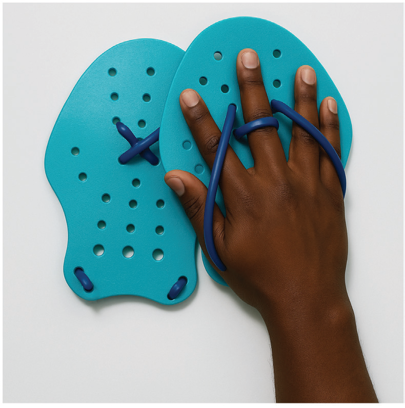
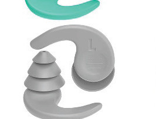
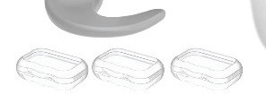
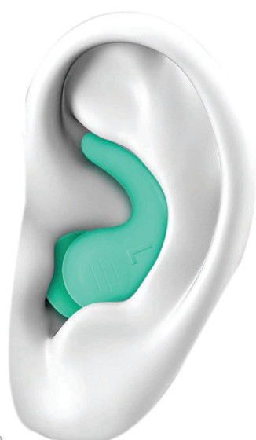

Earplugs
Earplugs are devices inserted into the ears to prevent water from entering the ear canal during swimming, Figure 3.10. They are commonly used by swimmers to reduce the risk of ear infections, such as ear fungus, and to enhance comfort during swimming. Earplugs are of various types depending on the swimmer’s preference and need. They are especially useful during long training sessions or for individuals with sensitive ears.



SPORTS STUDIES FORM TWO.indd 80
9/17/25 9:54 AM